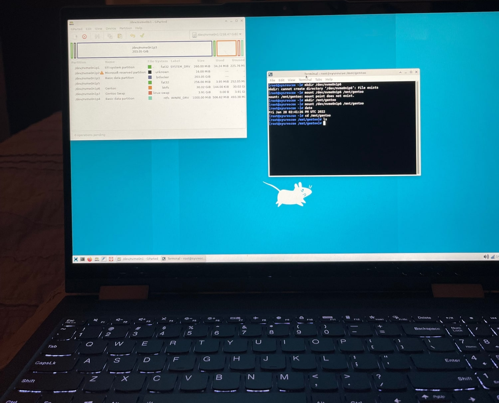

My name is Cayden Scruggs, this is my WIP (website in progress). Here you can find links to my projects and resume as well as some of my applicable skills!
WORK IN PROGRESS
Linux
I have used linux since my freshman year of college, 2021. I had been studying psychology and was approaching the realization that the major was not for me.
I wasn't sure what I would do instead though, but had always been passionate about computers and was becoming interested in Cybersecurity. My first foray into linux was
with Kali, which I dual booted on my laptop alongside Windows. This was moreso to experiment with using a different operating system than to experiment with Kali itself
though I learned a good deal, and was able to show off my ability to crack WPA-2 passwords to my peers using aircrack. I also experimented with wireshark and ran some hacks
on metasploit. Since, I have taken Unix/Linux Fundamentals which has given me a large boost to my bash scripting abilities, though I was already comfortable with the basics of
working in a linux environment and navigating the filesystem. Currently, I use Manjaro as my main distro alongside a smaller partition for Windows 10.
My first attempt at a gentoo installation!
My first successful Manjaro installation.
My first ever Linux distro.
Java
I began working with Java in August of 2022. Before this, I had done some sporadic "programming" with HTML, CSS, some javascript, and mostly JSON file editing for modding
games. I fell in love with programming after my first Hello World program. Programming is absolutely my passion and I love every moment of it, from the depths of bug fixing to the
catharsis of finally writing functional code. My programming abilities have consistently been more advanced than the majority of my peers because I continue learning and practicing
in my free time. I have written a variety of advanced programs in Java and am quite confident in my abilities to tackle any situation in front of me, though I'm not afraid to sit down
and research a problem when I need to.
 A 2D game made entirely in java with no game engine or framework. The ghost, Fred, is my girlfriend's design!
A 2D game made entirely in java with no game engine or framework. The ghost, Fred, is my girlfriend's design!
C#
I have been using C# since October of 2022, and have already gained a strong understanding of the language. I use C# in Unity Game Editor projects and have probably written my best code
in this language. Currently, I am working on a game revolving around a simulated genetics system that is accurate to the real world genetics of the creatures I'm emulating! I'm extremely passionate
about this project in particular as it has not only a source of great creative inspiration, but gives me a way to learn many different aspects of programming and computer science in an environment
where my progress is directly visible.
Unity
I have been using the Unity Game Editor since October of 2022. While I am fairly experienced with the software and have already made great progress on my main project, I am aware that there is still
a good deal that I don't know yet. Because of this, I am continuing to research and work in the environment as often as I can, making frequent visits to the documentation, so that I can master
Unity and become a stronger developer. My work in Unity has also exposed me to a much wider range of content and skills than programming alone would.
This is a screenshot from an early build of my current project, based around breeding snakes.
HTML & CSS
I have used HTML and CSS since January of 2021. I had a fair bit of exposure prior to this as I've been interested in and working on computers and websites my entire life, but it was in January
that I took a class specifically geared towards website design, and learned how to use HTML and CSS in order to create a smooth, visually-pleasing website. This website was entirely designed by myself,
and these skills carry over to fields such as app and UI design.
Hardware
I have always enjoyed taking machines apart to figure out how they work, and I feel no differently towards computers. I am very familiar with the inner workings of computers and how to diagnose and fix the vast
majority of problems a typical user might face, on Windows and Linux machines. I have upgraded parts in both of my main computers multiple times, and am currently building a new computer.
Recently, I upgraded the GPU in my pc from a GTX 970 to a 1080 ti.
GIMP
I have a great deal of experience with photo and video editing software, as I have always been interested in creative endeavors. I have been using GIMP now that I use linux as my main distro, and have
become quite skilled in creating and editing all sorts of assets. I use GIMP in order to make art for games, icons for websites and UIs, edit photos and documents, and more. I used Pixlr before GIMP, and
am confident in my abilities.
Git
I have used Github for years, looking through code uploaded by other programmers to learn and find cool projects, but only recently began learning git. I currently have three local git repositories that I
frequently push to my github accounts, this website being one of them!
 A dark CYOA-RPG game in the form of a Java CLI. (download)
A dark CYOA-RPG game in the form of a Java CLI. (download)
 My resume, I'm currently open to internships in the tech sphere! (pdf)
My resume, I'm currently open to internships in the tech sphere! (pdf)